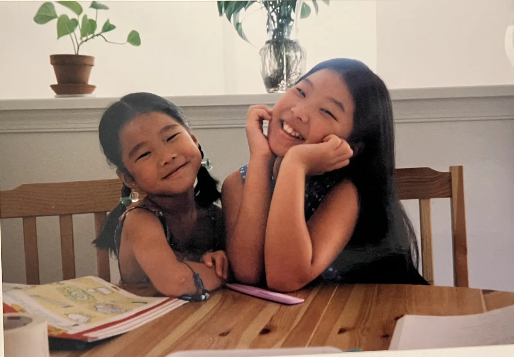
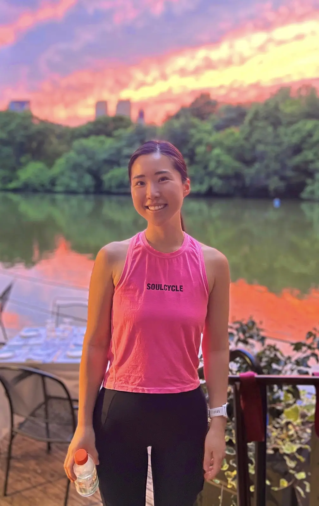
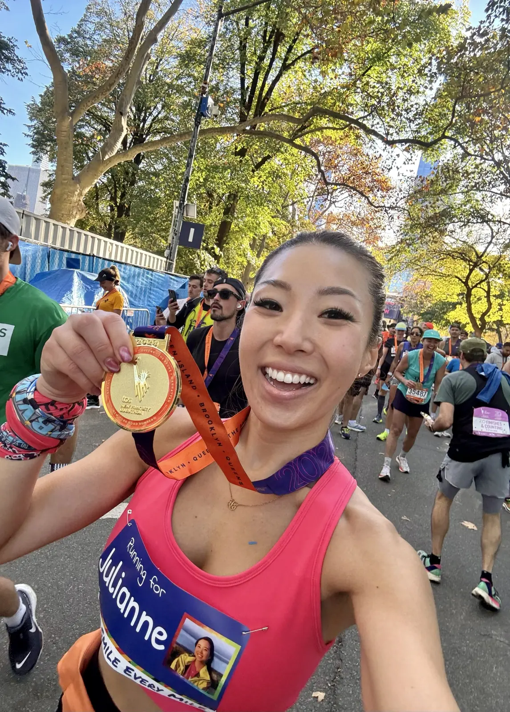
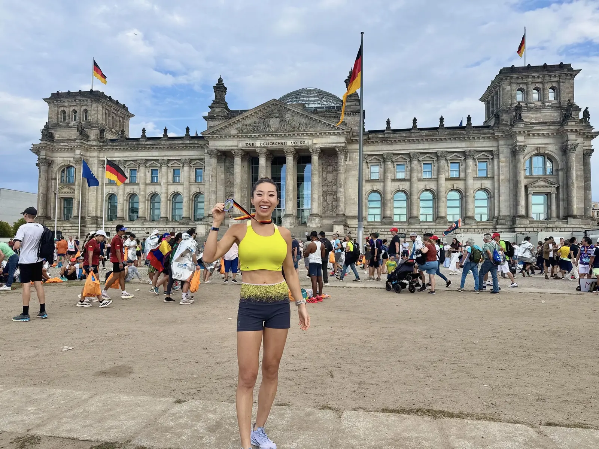

Contribute any amount that feels meaningful to you.
Her story
Why I’m Running
In January 2023, a few months after losing my little sister Julianne to suicide, I ran my first race. I didn’t realize it then, but it marked the beginning of something much bigger for me: a way to reconnect with living.
Julianne wasn’t only my sister. She was my best friend. We grew up side by side, immigrated to the U.S. together, attended the same schools and eventually moved to the same cities. She knew me better than anyone. She was simply part of how I imagined the rest of my life.
When she died, I felt completely unanchored in a world I no longer recognized.


Running came into my life partly because of her. After she died, I found the collection of running gear she had carefully put together. Julianne had only recently started running. She had struggled with depression for years and tried so hard to feel better, and for a while running seemed to give her something: a goal, movement, endorphins, a feeling of belonging.
I understood why she loved it.
So I started running too.
Over time, it became a place where I could feel connected to life again, and connected to her. I run through the neighborhoods we used to wander together in New York. Sometimes I talk to her. Sometimes we’re quiet, the way we could always sit beside each other without needing to say anything.
And on the days when I don’t feel her there, I keep running anyway.
Since then, I’ve carried Julianne through finish lines, including the New York City and Berlin Marathons. At NYC, I wore her name on my bib for consecutive years and heard strangers along the course cheering her name back to me.
She would have absolutely loved it.

